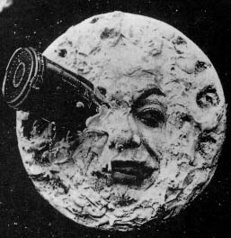
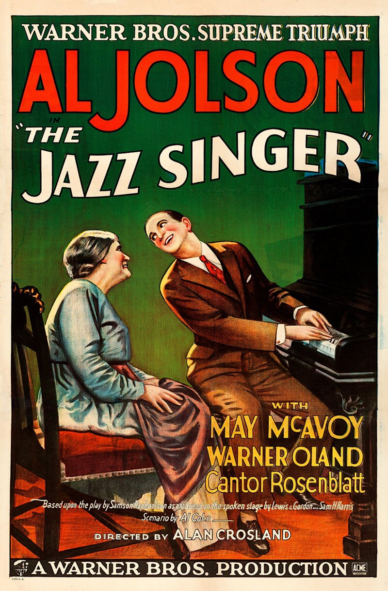
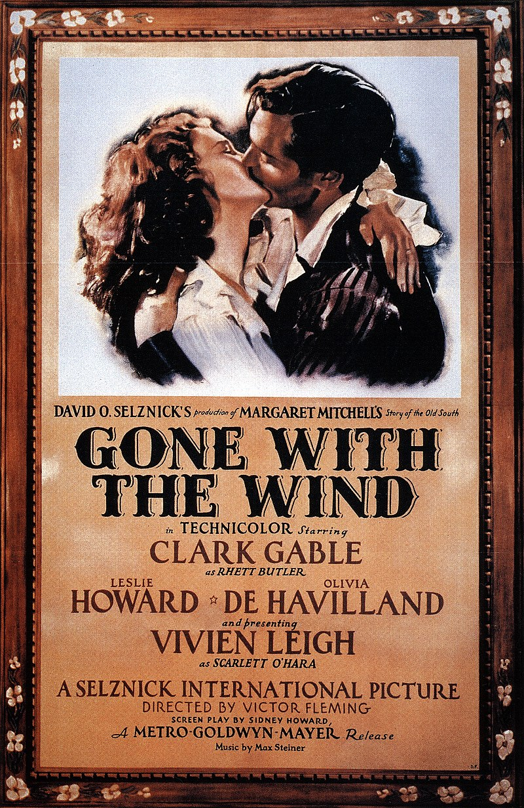

Historia del Cine
El Inicio del Cine
El 28 de diciembre de 1895 marcó un hito en la historia del entretenimiento. En esta fecha, los hermanos Lumière, Auguste y Louis, presentaron de manera pública una proyección que incluía escenas cotidianas como la salida de obreros de una fábrica en Lyon, la demolición de un muro, la llegada de un tren y la salida de un barco del puerto. Este invento, como cinematógrafo, fue un éxito inmediato, no solo en Francia, su país de origen, sino también en toda Europa y América del Norte. La capacidad de capturar y reproducir la vida en movimiento fascinó al público y sentó las bases para el desarrollo del cine tal como lo conocemos hoy.
Alice Guy: La Primera Directora de Cine
Alice Guy se destacó como la primera directora de cine, siendo pionera en el cine narrativo y cultural. Superó el enfoque demostrativo de los hermanos Lumière y estableció las bases para lo que se consideraría ficción en el futuro. Guy fue también la primera en mantenerse económicamente a través de esta profesión. Su película inicial, y por ende, la primera en la historia del cine, fue "El hada de los repollos" (La Fée aux Choux, 1896). Esta película, aunque de corta duración, demostró que el cine podía ser utilizado para contar historias, abriendo la puerta a la creación de películas de ficción.

Georges Méliès: El Mago del Cine
Tras el éxito de Guy, Georges Méliès decidió ingresar al mundo del cine. Méliès, un mago de profesión, vio en el cine una nueva forma de asombrar al público. Produjo películas con historias y decorados fantásticos, como "Fausto" y "Barba Azul" (1901), desarrollando nuevas técnicas cinematográficas. Pero fue con "Viaje a la Luna" (1902) y "Viaje a través de lo imposible" (1904) donde Méliès realmente dejó su huella. Aplicó la técnica teatral ante la cámara, creando los primeros efectos especiales y la ciencia ficción filmada. Sus películas, llenas de imaginación y maravilla, siguen siendo admiradas hoy en día.
La Llegada del Sonido
En 1927, se estrenó la primera película con sonido, "El cantante de jazz", marcando un cambio radical en el cine tal como se conocía. Con la llegada del sonido, el cine dejó de ser un espectáculo mudo para convertirse en una experiencia audiovisual completa. Se abandonó el lenguaje donde primaba la expresividad de segmentos contrastantes para imponer una mayor continuidad narrativa y fluidez argumental. En el mismo año, se introdujo el doblaje, permitiendo que las películas fueran disfrutadas por audiencias de diferentes lenguajes y culturas.
El Color Llega al Cine
En 1935, Rouben Mamoulian filmó en Technicolor "La feria de la vanidad (Becky Sharp)", marcando el inicio de la era del color en el cine. Sin embargo, fue con "Lo que el viento se llevó" (1939) cuando el color alcanzó su máxima plenitud. Esta película, con su vibrante paleta de colores, demostró el potencial del color para mejorar la narrativa y la estética de las películas. Desde entonces, el color se ha convertido en una parte integral del cine, permitiendo a los cineastas explorar nuevas formas de contar historias y evocar emociones.
Ciudadano Kane y su impacto en el cine
"Ciudadano Kane", dirigida por Orson Welles en 1941, es una película que ha dejado una huella indeleble en la historia del cine. A través de su narrativa innovadora, técnicas cinematográficas revolucionarias y una poderosa actuación, la película ha sido reconocida como una de las mejores de todos los tiempos.
El Western en el cine
El western es un género cinematográfico típico del cine estadounidense que se ambienta por lo general en el viejo Oeste estadounidense. A pesar de ser un género netamente norteamericano, la influencia del western en la cinematografía mundial es indudable.
El cine de los años 70
La década de los 70 es considerada como una de las más importantes en la historia del cine. Durante este periodo, se produjo una gran evolución en el cine, marcando la concepción del cine moderno como lo entendemos hoy en día.
El cine de los años 80 y la llegada del Blockbuster
Los años 80 marcaron la llegada del concepto moderno de Blockbuster. Hollywood capitalizó el éxito taquillero de películas como "Star Wars" y reinventó todo su sistema de producción para una nueva era.

El cine en la actualidad
En la actualidad, el cine no solo sirve como entretenimiento, sino también como un elemento de concientización para la sociedad. Hollywood sigue dominando el panorama mundial, pero también subsisten cineastas y filmografías al margen de Hollywood.